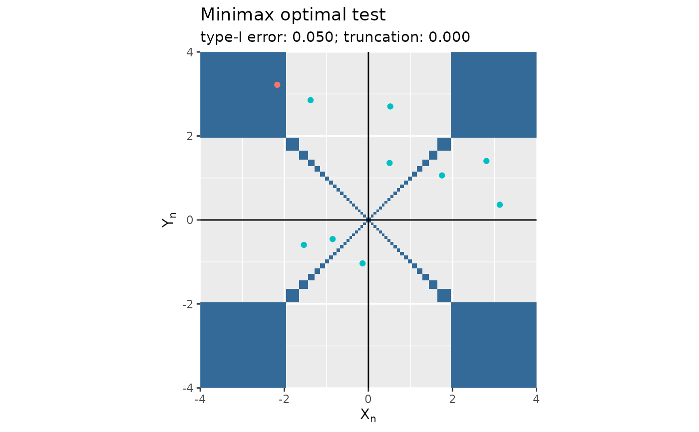

Plots the output of functions mediation_test_minimax and mediation_test_Bayes with the rejection region.
plot.mediation.test.RdPlots the output of functions mediation_test_minimax and mediation_test_Bayes with the rejection region.
Arguments
- x
An output of
functionsmediation_test_minimaxormediation_test_Bayes.- filename
Either
NULL(defaults) or a file name to create on disk.- return_fig
A
logical, to request that the 'ggplot2' object be returned (if 'TRUE') or not (if 'FALSE').- xlim, ylim
Two
vectorsofnumerics, the wished x-axis and y-axis ranges (both default to 'c(-4, 4)').- ...
Not used.
Value
Nothing unless 'return_fig' is set to 'TRUE', in which case the function returns the 'ggplot2' object.
Examples
n <- 10
x <- MASS::mvrnorm(n, mu = c(0, 0), Sigma = diag(c(1, 1)))
delta <- matrix(stats::runif(2 * n, min = -3, max = 3), ncol = 2)
epsilon <- stats::rbinom(n, 1, 1/2)
delta <- delta * cbind(epsilon, 1 - epsilon)
x <- x + delta
(mt <- mediation_test_minimax(x, alpha = 1/20))
#> Testing the composite null 'delta_x * delta_y = 0' against its alternative 'delta_x * delta_y != 0':
#> * method:
#> minimax
#> * test statictic:
#> [,1] [,2]
#> [1,] 1.2484688 -0.5376506
#> [2,] -1.8701727 -0.4524261
#> [3,] -1.6003791 -0.4392910
#> [4,] 0.5331733 -0.6162231
#> [5,] -2.5484056 0.4416346
#> [6,] -0.3624240 2.7990407
#> ...
#> * wished type-I error:
#> [1] 0.05
#> * user-supplied truncation parameter:
#> [1] 0
#> * size of the sample used to derive the test statistic ('Inf' to use a Gaussian approximation; otherwise, use a product of Student laws):
#> [1] Inf
#> * decision [0 rejection(s) overall]:
#> cannot reject the null for its alternative with confidence 0.050
#> cannot reject the null for its alternative with confidence 0.050
#> cannot reject the null for its alternative with confidence 0.050
#> cannot reject the null for its alternative with confidence 0.050
#> cannot reject the null for its alternative with confidence 0.050
#> cannot reject the null for its alternative with confidence 0.050
#> ...
#> * (conservative) p-value:
#> [1] 0.5908183 0.6509621 0.6604507 0.2182841 0.6587537 0.7170352
#> ...
plot(mt)
